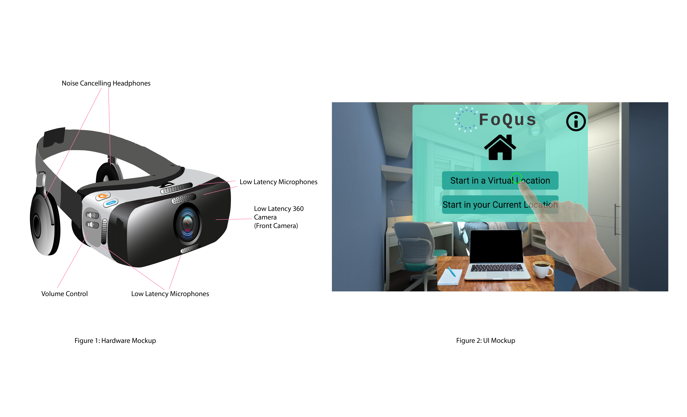

Overview
Problem
When a person becomes distracted from their work, hours of productivity can be lost. A study done by Gloria Mark, an HCI professor at the University of California Irvine, discovered that it takes an average of about 23 minutes to return to the original task after an interruption. All of this lost time could bleed into other aspects of a person’s life, which in turn could come back to negatively affect their studies. Thus, a vicious cycle of playing catch-up is created. Gloria Mark stated in the New York Times that their research showed distractions also led to high-stress levels and a bad mood. It is difficult to avoid distractions as they can be present in all kind of environments: noise, people walking around, the current environment is too familiar, etc.
Solution
FoQus is a Mixed Reality (MR) headset and application design that allows users to virtually adjust and modify their study environments so that they may be productive and distraction-free throughout the course of their study session. The MR headset uses low-latency 360 degree cameras and microphones to capture the user's real environment. It then displays the view on the screen inside the device and plays the background audio through the noise-canceling headphones. It supports two main functionalities:
- It allows users to change the background of their study environment to be a completely different virtual environment, and they have the option to have other users of the system work around them.
- It allows users to remove distractions from their current environment in the MR visual and audio display.